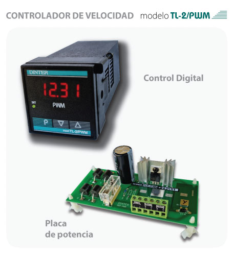

Catálogo
Variador de velocidad
Inicio
›
Productos
›
Variador de velocidad
Variador de velocidad
Modelos
disponibles

48×48 mm
Controlador digital de velocidad
TL-2/PWM
Controlador digital de velocidad para motores de corriente continua. Incluye control digital y placa de potencia.
0–100 % / m/min
220 Vca
Con placa de potencia
Ver ficha técnica